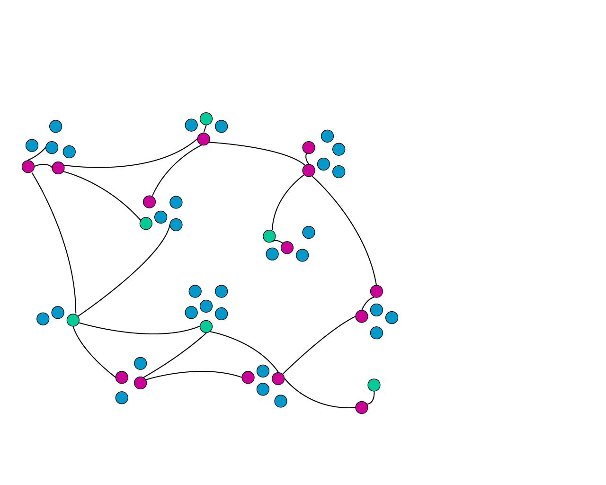
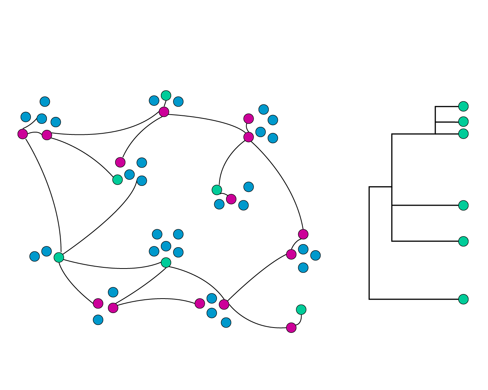
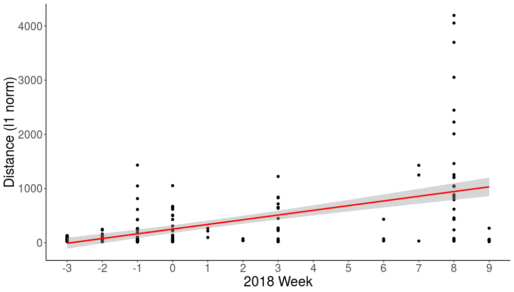

Application of whole genome sequencing to the ORCHARDS household influenza surveillance project.
Kelsey Florek, MPH, PhD
2019 Wisconsin Virology Conference
May 21, 2019

Slides available at:
www.k-florek.net/talks
disease transmission and population dynamics

disease transmission and population dynamics

Oregon Child Absenteeism due to Respiratory Disease Study (ORCHARDS)
Relationship between school absenteeism and influenza in the community
What is the genetic diversity of influenza in the ORCHARDS study?
How does the genetic diversity of influenza in this community change over the season?
What is the likelihood a linked infection is a transmission event?
2017-2018 influenza season
- day 0 and day 7 post-absence
- pharyngeal swabs collected from children who reported absent
- family members of household conducted self-swabs
criteria for sequencing
linked infection: child was positive for influenza and at least one household member was positive on day 0 or day 7
- total: 149
- influenza A: 109
- influenza B: 40
Sequencing influenza
- directly from sample
- PCR to confirm
- short read, large depth sequencing
What is the genetic diversity of influenza in the ORCHARDS study?
How does the genetic diversity of influenza in this community change over the season?
What is the likelihood a linked infection is a transmission event?
genetic diversity appears to increase over time

What is the genetic diversity of influenza in the ORCHARDS study?
How does the genetic diversity of influenza in this community change over the season?
What is the likelihood a linked infection is a transmission event?
Household transmission is likely
- 46 total household pairs
- 34 passing sequencing quality control
- 1 pair had a discrepant subtype
What does this tell us about influenza
- how generalizable statements from large scale surveillance
- effectiveness of interventions at the community level
- defining how changes at the community level affect global evolution
Acknowledgements
- Wisconsin State Laboratory of Hygiene
- Dr. Peter Shult
- Dr. Allen Bateman
- Erik Reisdorf
- Richard Griesser
- Tonya Danz
- Orchards Study group
- Dr. Jonathan Temte
- Shari Barlow
- Maureen Goss
- Emily Temte